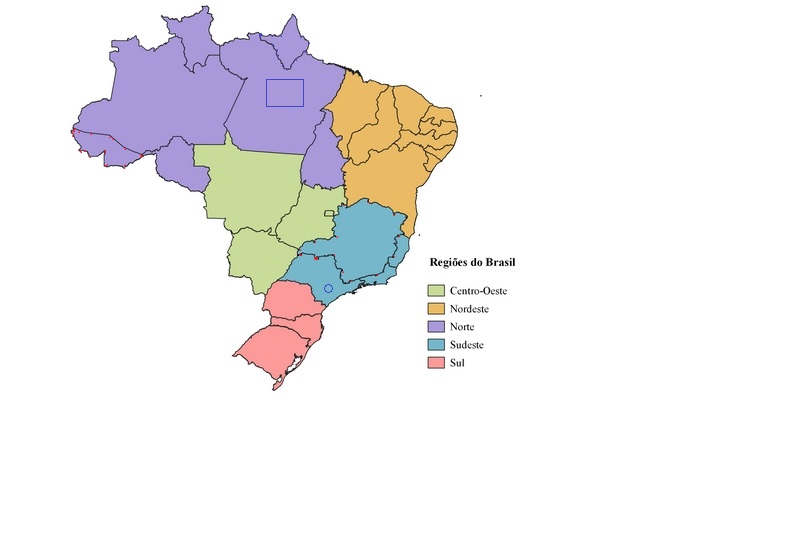

Aula#07 - area e map: Mapeando Links
- A tag: area trabalha junto com a tag: mapa
- A tag: area é filho da tag: map
- A tag: area - Ela irá definir uma área clicavel, através de definições de formas
- Eu posso definir uma área clicavel como sendo um retângulo(rect), círculo(circle) ou um poligono(poly)
- Eu posso associar essas áreas de click com uma imagem
- tag map - mapeia a áreas de click
